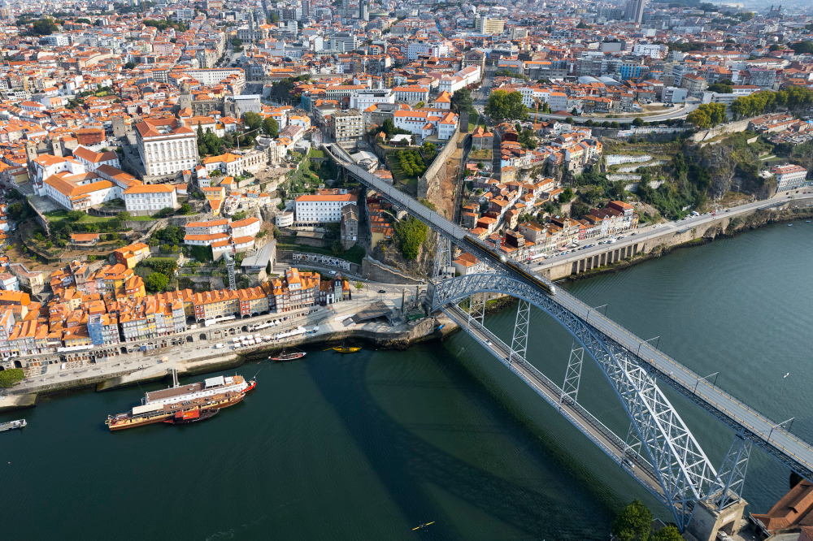

Cómo Componer Fotografías Atractivas
La composición es clave para lograr fotografías atractivas y visualmente impactantes. Algunos consejos básicos incluyen utilizar la regla de los tercios para colocar los elementos principales fuera del centro, buscar líneas guía naturales para conducir la mirada del espectador y prestar atención al equilibrio y la simetría en la escena. ¡Experimenta con diferentes ángulos y perspectivas para encontrar la composición perfecta que haga destacar tus imágenes!
Hace 1 dia